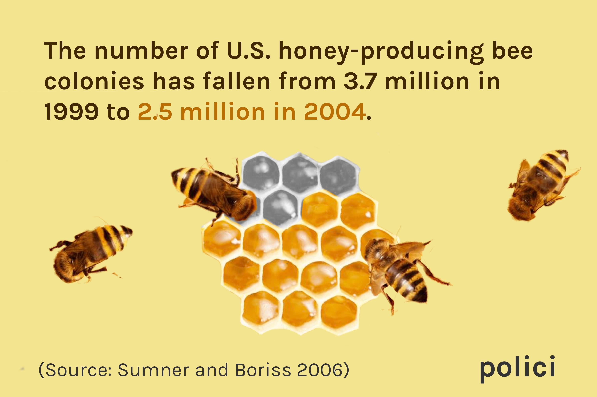
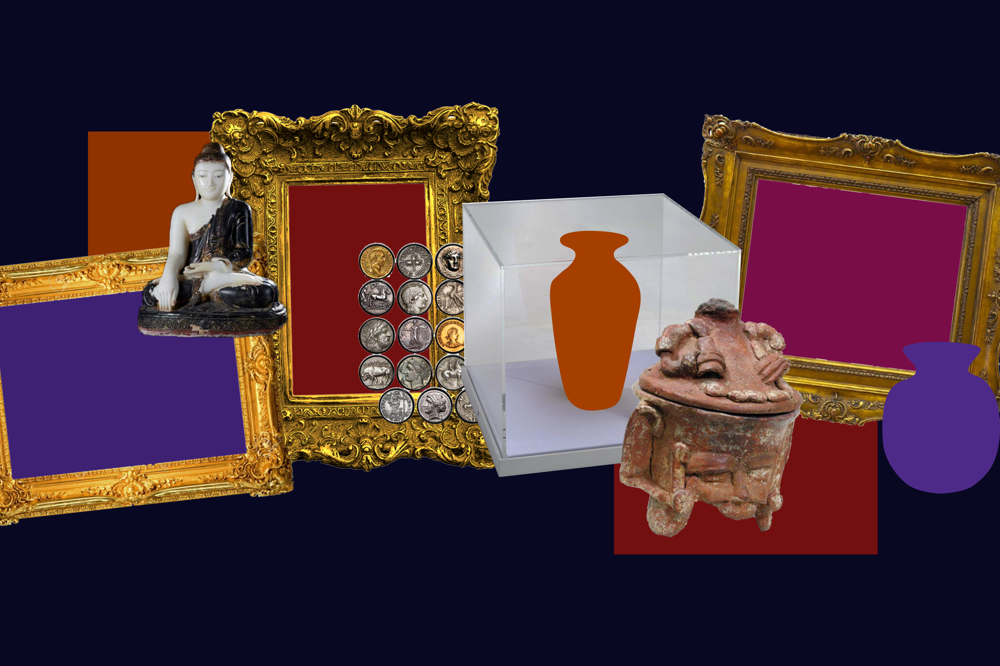
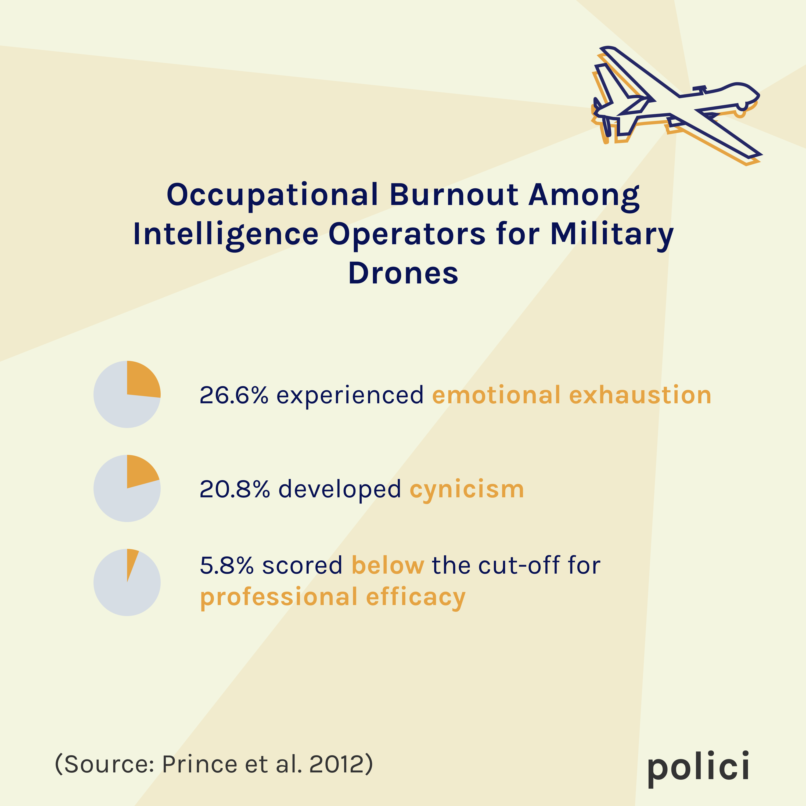
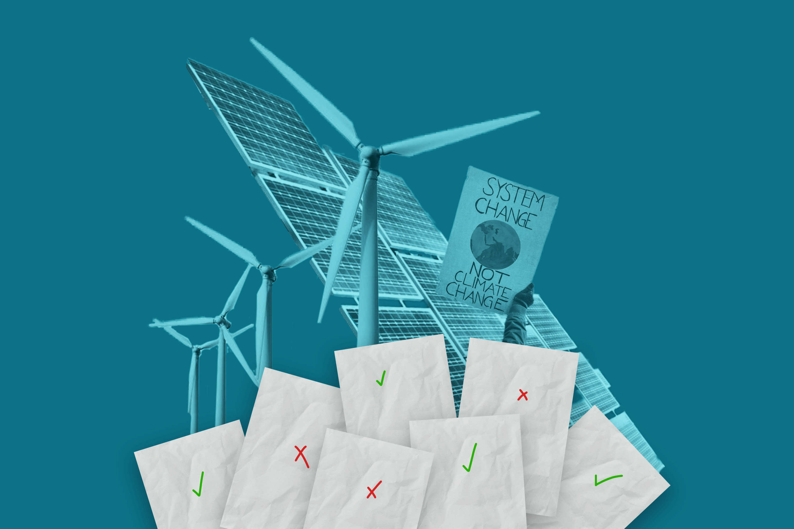

June 2020 - present
Frontend Lead
Graphic Designer
Web Designer
Web
Web: Ben Xiang, Johnny Wu, Nikki Bregman
Design: Pete Assakul, Olivia Gee, Mei Johnson, Talia Fishman
Research is inaccessible.
Ordinary people want to read about academic research to stay informed on reliable, recent findings. But this is difficult, because
Polici's content team and machine learning model work to translate dense research papers into readable summaries. The graphic design team (including me!) visualizes the concepts and data to better connect with the humans who are reading. The web team (also me!) builds a platform for anyone to read and learn from the summaries.
Contact me to learn more about my design process and the technology used.
.gif)
On potential COVID-19 vaccines

On the demographic make-up of migrants taken into custody at the U.S. southern border
On U.S. honey bee populations
On illicit trade and smuggling of cultural objects
On the consequences and personal toll of drone operation
On how the framing of environmental policies affect their support across party lines
Interdisciplinary time management. I don't have to be confined to one discipline of design or development. The Polici team has supported and encouraged me to explore my own interests across disciplines.
Self-guided problem solving. I had no experience with React.js or most of the Adobe Suite before this summer. It was challenging to rely on online resources and deal with errors upon errors, but I ultimately learned so much!
Rapid iteration. In a startup environment, we are getting new feedback and requests every few minutes. My work evolved so rapidly each day, but this pushed me to prioritize tasks and somehow launch a website and dozens of graphics within the first four weeks.